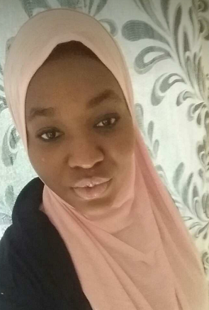

Dr Fatoumata Beyai
The woman who will always continue to save life's.

Dr. Fatoumata Beyai, this was when she was give out a speech on how to be a great public health officer.
Here's is the time line of Dr. Fatoumata Beyai
- 1998 - Born in Brikama, West coast.
- 2005 - She started her primary education. Upon her completion she was term the best and most behaving student.
- 2011 - She was then enroll in St peter's junior school were she received honors certificates after each end of term examination.
- 2017 - She sat for the WASSCE examination and she got nine credits.
- 2018 - She was enrolled into the University of the Gambia to study public health.
- 2020 - She was awarded the most outstand public health student since the university has began operating
- 2021 - She was the employeed at the UN to be the responsible for the health issues of refugees all over the world.
- 2023 - The university of the Gambia took her run free programme for public health students so that the university could continue producing people like her.
Beyai's life and acheivement are testimony to the far-reaching contribution that one woman's towering intellect, persistence and sceientific vision can make to human peace and progress.-- Gambian Vice President Mariama Faal
If you have time you should read about this incredible human being on her Wikipedia entry